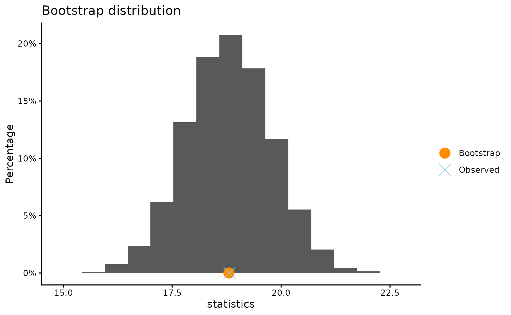
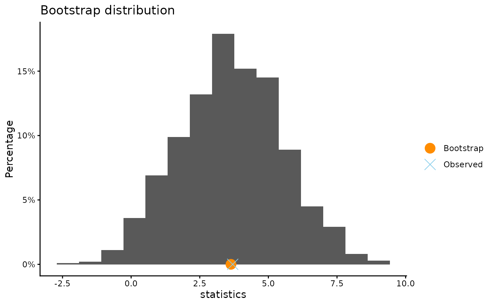
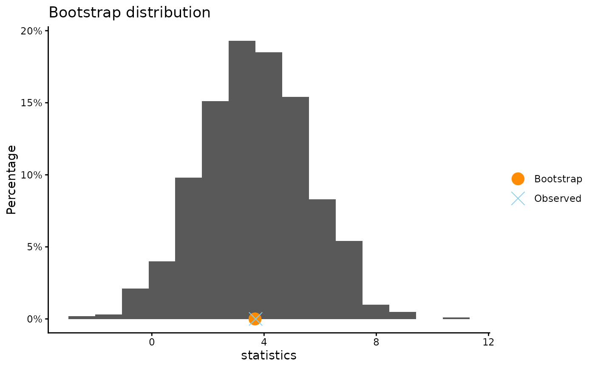
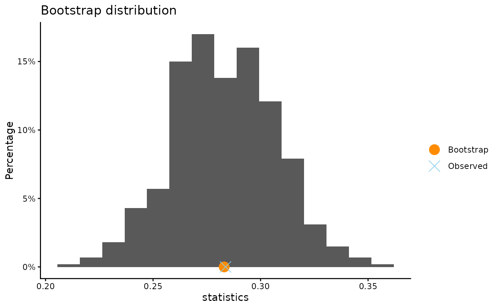
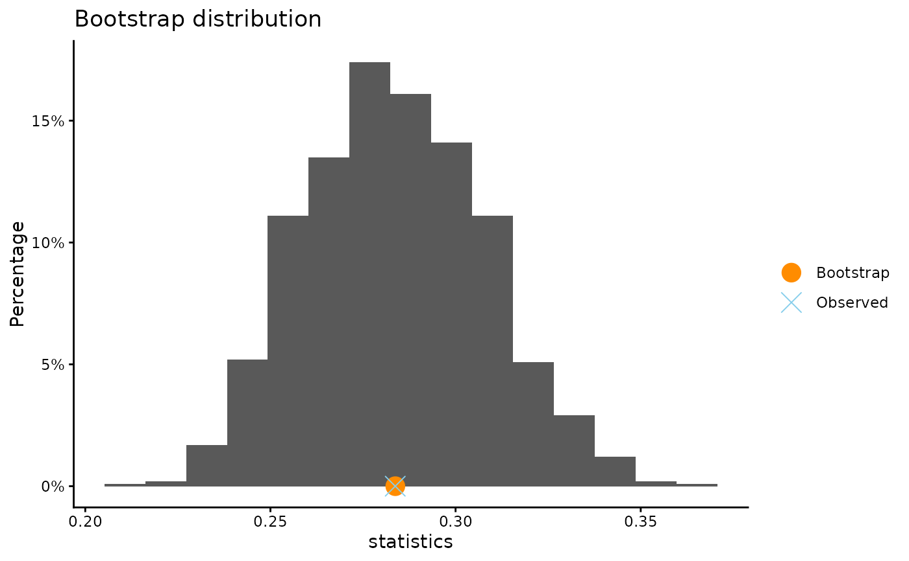
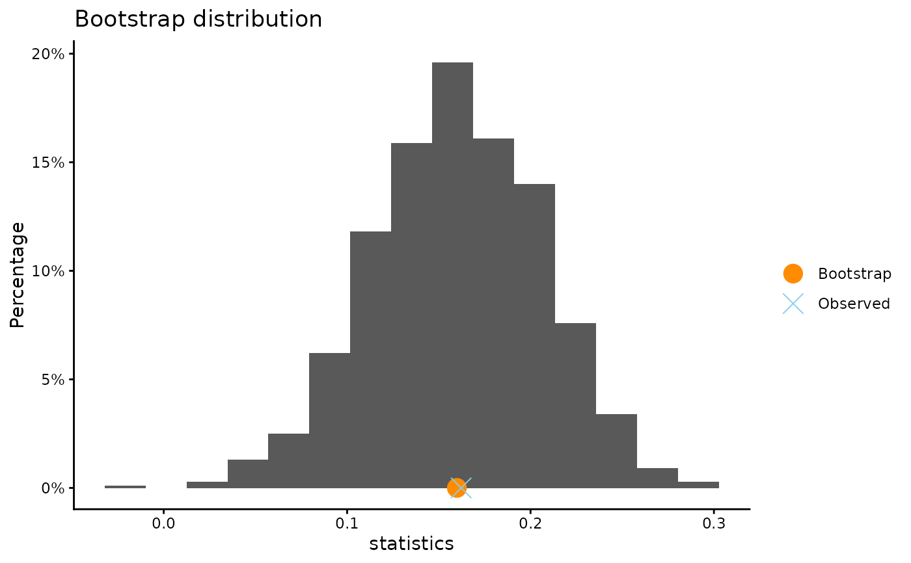
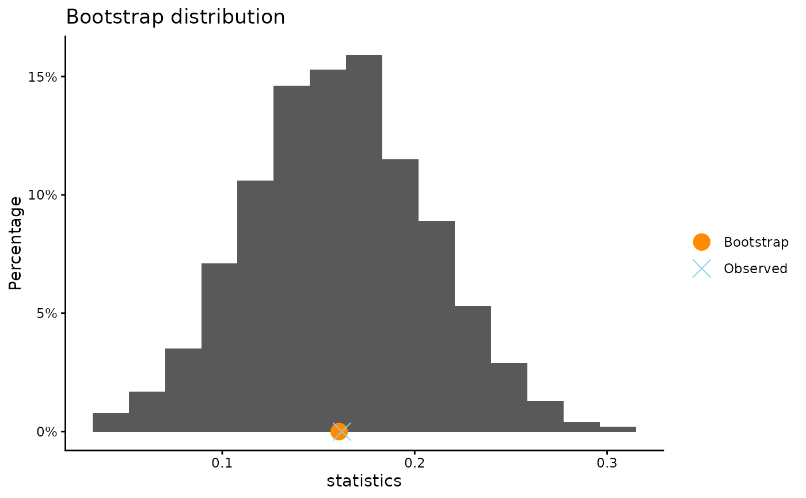

Bootstrap a single variable or a grouped variable
Usage
boot(x, ...)
# Default S3 method
boot(
x,
group = NULL,
statistic = mean,
success = NULL,
conf.level = 0.95,
B = 10000,
plot.hist = TRUE,
plot.qq = FALSE,
x.name = deparse(substitute(x)),
xlab = NULL,
ylab = NULL,
title = NULL,
seed = NULL,
...
)
# S3 method for class 'formula'
boot(formula, data, subset, ...)Arguments
- x
a numeric, logical, factor, or character vector. Logical, factor, and character vectors with exactly two unique values are converted to 0/1, and
meanis used to compute the proportion.- ...
further arguments to be passed to or from methods.
- group
an optional grouping variable (vector), usually a factor variable. If it is a binary numeric variable, it will be coerced to a factor.
- statistic
function that computes the statistic of interest. Default is the
mean.- success
a character string naming the level of
xto code as 1 whenxis a logical, factor, or character variable. Defaults toNULL, which uses the second factor level (alphabetically) orTRUEfor logical vectors.- conf.level
confidence level for the bootstrap percentile interval. Default is 95%.
- B
number of times to resample (positive integer greater than 2).
- plot.hist
logical value. If
TRUE, plot the histogram of the bootstrap distribution.- plot.qq
Logical value. If
TRUE, create a normal quantile-quantile plot of the bootstrap distribution.- x.name
Label for variable name
- xlab
an optional character string for the x-axis label
- ylab
an optional character string for the y-axis label
- title
an optional character string giving the plot title
- seed
optional argument to
set.seed- formula
a formula
y ~ gwhereyis a numeric vector andga factor variable with two levels. Ifgis a binary numeric vector, it will be coerced to a factor variable. For a single numeric variable, formula may also be~ y.- data
a data frame that contains the variables given in the formula.
- subset
an optional expression indicating what observations to use.
Details
Perform a bootstrap of a statistic applied to a single variable, or to the
difference of the statistic computed on two samples (using the grouping
variable). If x is a binary vector of 0's and 1's and the function is
the mean, then the statistic of interest is the proportion.
Observations with missing values are removed.
Methods (by class)
boot(default): Bootstrap a single variable or a grouped variableboot(formula): Bootstrap a single variable or a grouped variable
References
Tim Hesterberg's website https://www.timhesterberg.net/bootstrap-and-resampling
Examples
#ToothGrowth data (supplied by R)
#bootstrap mean of a single numeric variable
boot(ToothGrowth$len)
#>
#> ** Bootstrap interval for mean
#>
#> Observed ToothGrowth$len : 18.81333
#> Mean of bootstrap distribution: 18.80062
#> Standard error of bootstrap distribution: 0.97955
#>
#> Bootstrap percentile interval
#> 2.5% 97.5%
#> 16.88325 20.73000
#>
#> *--------------*

#bootstrap difference in mean of tooth length for two groups.
boot(ToothGrowth$len, ToothGrowth$supp, B = 1000)
#>
#> ** Bootstrap interval for difference of mean
#>
#> Observed difference of mean : OJ - VC = 3.7
#> Mean of bootstrap distribution: 3.63724
#> Standard error of bootstrap distribution: 1.86715
#>
#> Bootstrap percentile interval
#> 2.5% 97.5%
#> 0.068500 7.346833
#>
#> *--------------*

#same as above using formula syntax
boot(len ~ supp, data = ToothGrowth, B = 1000)
#>
#> ** Bootstrap interval for difference of mean
#>
#> Observed difference of mean : OJ - VC = 3.7
#> Mean of bootstrap distribution: 3.6779
#> Standard error of bootstrap distribution: 1.91449
#>
#> Bootstrap percentile interval
#> 2.5% 97.5%
#> -0.117250 7.344333
#>
#> *--------------*

# Penguin Survival proportion
boot(penguin_survival$Status, data = penguin_survival, B = 1000)
#> Note: "Survived" coded as the success (1).
#>
#> ** Bootstrap interval for proportion
#>
#> Observed penguin_survival$Status : 0.28371
#> Mean of bootstrap distribution: 0.28307
#> Standard error of bootstrap distribution: 0.02398
#>
#> Bootstrap percentile interval
#> 2.5% 97.5%
#> 0.2359551 0.3286517
#>
#> *--------------*

# same as above, but with the formula syntax
boot(~Status, data = penguin_survival, B = 1000)
#> Note: "Survived" coded as the success (1).
#>
#> ** Bootstrap interval for proportion
#>
#> Observed Status : 0.28371
#> Mean of bootstrap distribution: 0.28373
#> Standard error of bootstrap distribution: 0.02449
#>
#> Bootstrap percentile interval
#> 2.5% 97.5%
#> 0.2387640 0.3287219
#>
#> *--------------*

# Penguin Survival if tagged vs. untagged
# bootstrap difference in proportions of survival
boot(penguin_survival$Status, penguin_survival$TagType, B = 1000)
#> Note: "Survived" coded as the success (1).
#>
#> ** Bootstrap interval for difference of proportion
#>
#> Observed difference of proportion : Electronic - Metal = 0.16218
#> Mean of bootstrap distribution: 0.15984
#> Standard error of bootstrap distribution: 0.04596
#>
#> Bootstrap percentile interval
#> 2.5% 97.5%
#> 0.06869911 0.24754380
#>
#> *--------------*

# now using the formula syntax
boot(Status ~ TagType, data = penguin_survival, B = 1000)
#> Note: "Survived" coded as the success (1).
#>
#> ** Bootstrap interval for difference of proportion
#>
#> Observed difference of proportion : Electronic - Metal = 0.16218
#> Mean of bootstrap distribution: 0.16076
#> Standard error of bootstrap distribution: 0.04636
#>
#> Bootstrap percentile interval
#> 2.5% 97.5%
#> 0.07053987 0.25033504
#>
#> *--------------*
